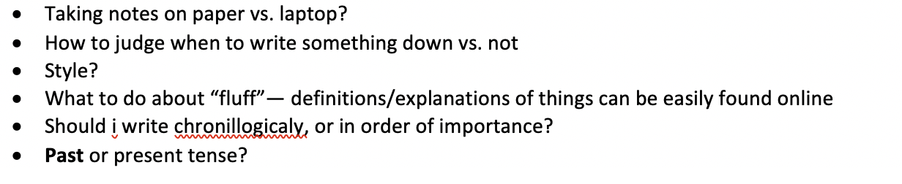
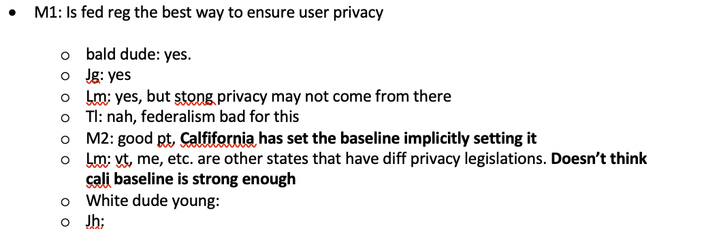
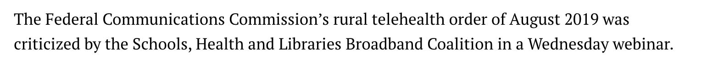
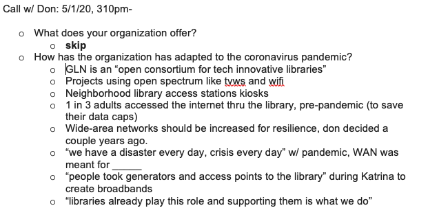
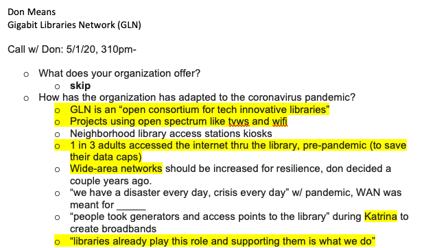
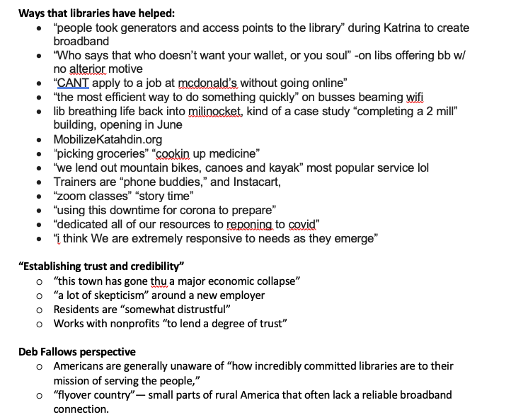
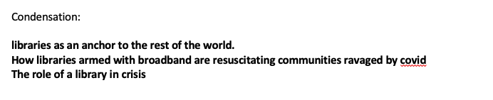
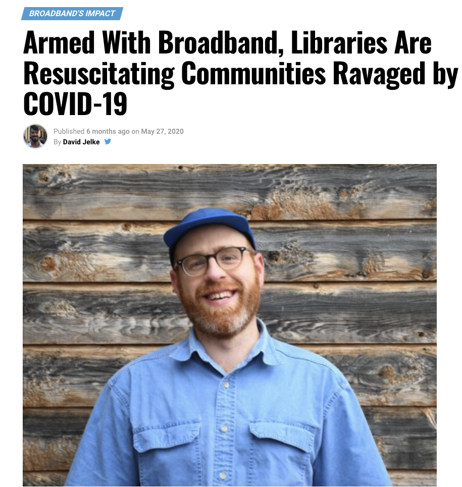
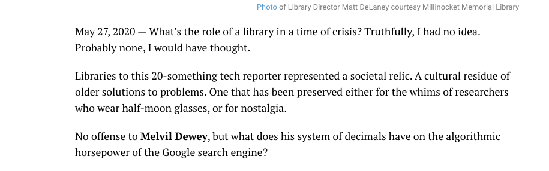

Broadband Breakfast is an online publication that covers the policy of technology with an emphasis on internet connectivity. Even among tech publications, Breakfast is non-partisan, its main bias being towards ensuring adequate broadband access to everyone (I mean, who doesn't like breakfast?). It is a small company, often with no more than 5 employees.
Upon being hired at Broadband Breakfast, I was given a byline, a press pass, and even a free sketch from a caricature artist at Google. It was time to earn my stripes.
I encountered many challenges when I first started reporting. Some questions I jotted down after my first event:
The hardest among them was scrambling to record all of the nuanced points ocurring in a conversation or panel. A sample of my first notes looked like this:
back then, my writing was not very organized, accurate, or spelled correctly
my first ledes, or the opening sentences that summarize a story and grip people's attention, weren't all-together too gripping
after months of working with Broadband, I developed a better verbal memory for recording people's words, contrived my own shorthand, and changed my focus to capturing quotations, trusting that the story would arise out of the whole of people's words when supported by my research
an "Enterprise story" wasn't based on an event, but rather a growing expertise in an area of broadband that required me to cultivate sources, interview experts, conduct extensive research, and put it all into a coherent and engaging narrative. These were the most difficult, and often most rewarding to write.
When interviewing someone, I would type down as many quotes that I thought were noteworthy (recording conversation and playing them back was often not a realistic option due to the sheer volume of events to cover and stories to publish)
I would then identify the most relevant, musical, and surprising quotes from an interview
Then I would sift through quotes to find the gems and group them into themes
By engaging in this process, the heart of the story would organically emerge and I would be left with my thesis
From there, the story would just fall into place
 The reporter life was a fast life, and not for me. The internship also confirmed my hunch of not wanting to go into politics, having witnessed an intensely divisive impeachment trial and listening to reporters I befriended who worked for more partisan publications. That's why I felt so lucky to have worked with Breakfast. I got to have the reporting experience I was so curious about in one of the most politically neutral fields of journalism. It confirmed my desire of working in communications and gave me a deeper appreciation for the design of words into messages and news events into stories. And lastly, it inculcated in me a passion for broadband and technology policy.